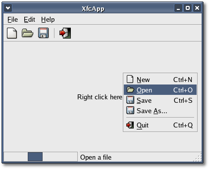

| Xfce
Foundation Classes |
|||||||||||||||||
|
|||||||||||||||||
Chapter 9: Adding International SupportTable of Contents
This chapter will take you step-by-step through the process of adding international support to the project you built in the previous chapter: Building a GNU autotools project. You should work through that chapter first, if you haven't done so, and come back to this chapter later. Most of the information presented here is from the GNU gettext documentation. The first two sections cover some important background information. The remaining sections show you how to add international support to an XFC package and explains how to get help with your translations. To be useful, a program must present its messages in a language that the user can understand. Internationalization is the process of making your software support a range of languages. Localization is the process of modifying a program so that it can display its messages in an appropriately translated form. These terms are often abbreviated to i18n and l10n respectively, after the number of letters between the first and last letters of each word. For localization, GTK+/GNOME uses the GNU gettext interface. GNU gettext works by using the strings in the original language (usually English) as the keys by which the translations are looked up. All the strings marked as needing translation are extracted from the source code with a helper program. Human translators then translate the strings into each target language. The locale is the set of settings for the user's country and/or language. It is usually specified by a string like "en_UK". The first two letters identify the language (English) the second two the country (the United Kingdom). Included in the locale is information about things like the currency for the country and how numbers are formatted, but more importantly, it describes the characters used for the language. The character set is the set of characters used to display the language. When storing characters in memory or on disk, a given character set may be stored in different ways - the way it is stored is termed the encoding. Preparing program sourcesThe changes required to prepare a program's source code falls into three categories. First, you have to make the localization functions known to all modules that need strings translated. Second, you should properly trigger the operation of GNU gettext when your program initializes, usually from within the main function. Last, you should identify and especially mark all constant strings in your program that need translation.Presuming that your program, or package, has been adjusted so all needed GNU gettext files are available, and your Makefile files have been updated (see later), each XFC module having translatable strings should contain the following line: #include <xfc/i18n.hh>This header file contains the XFC C++ interface to GNU gettext, and is the only internationalization header you need #include in your sources. The initialization of locale data should be done with more or less the same code in every program, as demonstrated below: int main (int argc, char *argv[]) i18n:: is the XFC internationalization namespace. The set_text_domain_dir() method sets the locale directory for the specified domain. The set_text_domain() method sets the translation domain for your program. PACKAGE and LOCALEDIR are preprocessor macros, and should be provided either by config.h or by the Makefile (see later). You
don't need to explicitly set the
locale because GTK+ sets the locale for you when you call Main::init().
If you want to set the locale, see the GTK+ documentation for
gtk_disable_setlocale().
You should modify your source files, marking all the translatable strings. Translatable strings should do the following:
The canonical keyword for marking translatable strings is gettext. This keyword resolves at run time to dynamically return the proper translation, as far as possible. Rather than litter sources with gettext, many programmers use a simple underscore as a keyword, and write: _("Translatable string") instead of gettext("Translatable string"). This reduces the textual overhead per translatable string to only three characters: the underscore and the two parentheses. Most strings are found in executable positions, that is, attached to variables or given as parameters to functions. However, a special case occurs where a function call to gettext() is not allowed, such as in an array initializer. In this case N_() (N stands for no-op) is used to mark a string for translation but no translation actually occurs; it's just a marker that resolves at run time to the string. Eventually you have to call gettext() on the string to actually fetch the translation. In C both _() and N_() are macros. In XFC, _() is a function call declared in <xfc/i18n.hh> and N_() is a macro. Invoking the gettextize programBefore using gettextize you should ensure that you have recent versions of GNU M4, GNU Autoconf and GNU gettext installed on your system. Most recent Linux distributions come with these programs already installed, if you installed the development packages. Also your project should use Autoconf and have a configure.ac file.The gettextize program is an interactive tool that helps the maintainer of a package internationalize through GNU gettext. It is used for two purposes:
gettextize
[ option... ] [ directory ]and accepts the following options:
If the
directory is given, it
should be the top-level directory of the package to prepare for using
GNU gettext. If it is not given, it is assumed that the current
directory is
the top-level directory.
A usual invocation for gettextize would be: $
gettextize --copy --force --intlgettextize provides the following files and carries out several tasks:
The gettextize program makes backup files for all files it replaces or changes, and also writes ChangeLog entries about these changes. This way, the careful maintainer can check after running gettextize whether its changes are acceptable, and possibly adjust them. An exception to this rule is the <intl> directory, which is added, or replaced or removed as a whole. Internationalizing an XFC packageWith all that information on board we can now start to internationalize the XfcApp project you built in the previous chapter. For this example you will have to use the source files you created in the <examples/tutorial/chapter08> subdirectory.First we need to add a few lines to configure.ac, the input file from which Autoconf generates the configure script. Add the following line to configure.ac just below the AC_INIT macro: AC_CONFIG_HEADER(config.h) The AC_CONFIG_HEADER macro
indicates
that you want to use a config header to define all the C preprocessor
macros, and that the name of the header should be config.h.
Next, you need to enable gettext support by adding the following lines to configure.ac, between the AC_PROG_CXX and AC_OUTPUT macros: ALL_LINGUAS="" The ALL_LINGUAS variable lists
all
the available translations in your package. It is a whitespace
separated
quoted string, such as "de es fr hu". Initially there are no
translations so its just an empty string.
The AM_GNU_GETTEXT macro checks for internationalization support. If you didn't pass the --intl option to gettextize this macro should instead read: AM_GNU_GETTEXT([external]) The AC_DEFINE_UNQUOTED macro defines the preprocessor macro LOCALEDIR in config.h, and computes its value. Now run gettextize by executing the following shell command: $
gettextize --copy --force --intlThe '--copy' option copies the files into the source tree instead of using symbolic links. The '-intl' option copies the libintl sources in a subdirectory named <intl> for use on systems that don't provide gettext(). The '--force' option overwrites any existing files. gettextize adds <m4/Makefile> to the AC_OUTPUT in configure.ac, and the m4 subdirectory to the SUBDIRS variable in Makefile.am. These are not really necessary since nothing gets compiled in the m4 subdirectory; many any maintainers remove them but don't worry about it for this example. If you haven't suppressed the <intl> subdirectory, you need to add the GNU config.guess and config.sub and files to your package. These files are needed because the <intl> directory has platform dependent support for determining the locale's character encoding, and these files are needed to identify the platform. You can obtain the newest version of config.guess and config.sub from ftp://ftp.gnu.org/gnu/config. Less recent versions are also contained in the GNU automake and GNU libtool packages. You don't have to worry about adding these files to the XfcApp project because they were added when you called libtoolize in the previous chapter. Normally, config.guess and config.sub are put in the top level directory of your package. Alternatively, you can put them in a separate <config> subdirectory, together with the other configuration support files like install-sh, ltconfig, ltmain.sh, mkinstalldirs and missing. If you do this, you will need to add the following line to your configure.ac script: AC_CONFIG_AUX_DIR(config) But don't add AC_CONFIG_AUX_DIR to your configure.ac script; for this example, we won't worry about it. gettextize adds <intl/Makefile> and <po/Makefile.in> to the AC_OUTPUT macro at the end of configure.ac. If the macro and arguments are all on the same line you wont need to modify the additions. If the macro runs over several lines you will need to check that the syntax is still correct, after the additions. For the purposes of this example leave the AC_OUTPUT macro and its arguments on one line. If you didn't pass the '--intl' option to gettextize then you don't need to add <intl/Makefile> to the AC_OUTPUT line. After running gettextize your configure.ac script should look like this: AC_INIT(src/main.cc)
AC_CONFIG_HEADER(config.h) PACKAGE=xfcapp VERSION=0.1.0 AM_INIT_AUTOMAKE($PACKAGE, $VERSION) XFCUI_REQUIRED_VERSION=4.3 PKG_CHECK_MODULES(XFCUI, xfcui-4.3 >= $XFCUI_REQUIRED_VERSION) AC_SUBST(XFCUI_CFLAGS) AC_SUBST(XFCUI_LIBS) GCONF_REQUIRED_VERSION=2.0.0 PKG_CHECK_MODULES(GCONF, gconf-2.0 >= $GCONF_REQUIRED_VERSION) AC_SUBST(GCONF_CFLAGS) AC_SUBST(GCONF_LIBS) AC_PROG_CXX AC_PROG_LIBTOOL ALL_LINGUAS="" AM_GNU_GETTEXT AC_DEFINE_UNQUOTED(LOCALEDIR, "${prefix}/${DATADIRNAME}/locale", [Name of gettext locale directory]) AC_OUTPUT(Makefile src/Makefile intl/Makefile
po/Makefile.in
m4/Makefile)Now you need to make a few changes and add a new file. First, add the <po> subdirectory to the SUBDIRS variable in the top-level Makefile.am, so that it reads: SUDDIRS
= intl m4 po srcYou could remove m4 because it is not really needed, but don't worry about it for this example. In the <po> subdirectory change the name of the file Makevars.template to Makevars. Also in the <po> subdirectory create the text file POTFILES.in and add the following lines to it and save the file: #
List of source files containing translatable strings. Now you need to call Autoheader to create config.h, the file listed in configure.ac above. Then you need to run aclocal to add the contents of the <m4> directory to aclocal.m4. Execute the following two shell commands: $
autoheaderand then run Autoconf to regenerate the configure script: $
autoconfNext, you need to make some changes to the XfcApp sources. Insert the following line at the beginning of <src/main.cc>, so the main function can use the preprocessor macros PACKAGE and LOCALEDIR: #include <config.h>XFC provides a convenient C++ wrapper for the GNU gettext interface in the header file <xfc/i18n.hh>. This is the only internationalization header that you need to include in your program. Add the following include statement to <src/xfcapp.hh>: #include
<xfc/i18n.hh>Next you need to initialize the locale data. This is done by adding the following two lines to the main function, before the call to init(): i18n::set_text_domain_dir(PACKAGE,
LOCALEDIR);i18n:: is the XFC internationalization namespace. The set_text_domain_dir() method sets the locale directory for the specified domain. The set_text_domain() method sets the translation domain for your package. After making the above changes, your <src/main.cc> file should look like this: #include
<config.h> Now you have to mark the translatable strings in the sources. In this example we will add one translatable string to XfcApp. Add the following include statement to the top of <src/ xfcapp.cc>: #include <xfc/gtk/label.hh> and then these lines of code to the end of the XfcApp constructor, before the call to main_vbox->show(): Gtk::Label *label = new
Gtk::Label(_("Right click here...")); The function call _() from <xfc/i18n.hh> marks the string "Right click here..." for translation. Compiling XfcAppNow your ready to run configure, make and install to check that XfcApp compiles and installs alright:$
autoconf If you work through this chapter adding the appropriate files and entries as instructed, and you compile and run this version of XfcApp, you will see the following window appear: 
Remember in the previous chapter you created an autogen.sh file to regenerate the project's output files after editing any input files. You can now add gettextize to this file so that the internationalization files also get updated: After adding gettextize(), your autogen.sh file should look like this: #!
/bin/shgettextize --copy --force --intlCreating the PO template fileAfter preparing your sources by marking all translatable strings, you need to create a PO template file using the xgettext program. xgettext creates a file named domainname.po. You need to change its name to domainname.pot. Why doesn't xgettext create it under the name domainname.pot right away? The answer is: for historical reasons. When xgettext was specified, the distinction between a PO file and PO file template was fuzzy, and the suffix .pot wasn't in use at that time.Before you create the PO template file there is one thing you need to do first. I don't know why, but when POTFILES is created automatically from POTFILES.in it inserts whitespace at the beginning of each line, before the file name. xgettext doesn't skip over this whitespace, and so looks for a file name that includes the whitespace. Of course xgettext doesn't find it and so it reports an error. You will have to manually remove all the whitespace from the beginning of each line in POTFILES before running xgettext. There are a lot of options that can be passed to xgettext so I suggest you read the GNU gettext documentation, its very thorough. If you invoke xgettext from the <po> subdirectory the command line is simplified somewhat. Execute the following shell command from the <po> subdirectory: xgettext
--files-from=POTFILES --default-domain=xfcapp --keyword=_xgettext parses the specified input file POTFILES, and creates the output file xfcapp.po. If it can't find any translatable strings in the sources no PO file will be created. You can specify the '--force-po' option to force xgettext to create an empty PO file when no translatable strings are found. The '--default-domain' option specifies the default translation domain for the package, in this case 'xfcapp'. Remember, you specified the domain name in the main function with a call to i18n::set_text_domain().The '--keyword' option is important. It specifies that an alternate keyword is being used to mark translatable strings. In XFC this should always be an underscore. Before doing anything else rename xfcapp.po to xfcapp.pot. This POT file is your project's PO template file. When starting a new translation, the translator creates a file called LANG.po, as a copy of the domainname.pot template file. For example, de.po for a German translation or fr.po for a French translation (or c3.po for a cyborg translation). If you looked in the <po> subdirectory before reading this section and found a xfcapp.pot file already there, that was because you compiled the project before creating your own. When no pot file is found make will call xgettext to create it. The GNOME Translation ProjectThe GNOME Translation Project is a project devoted to helping you with your translations. The way it works is that you contact the gnome-i18n mailing list to find out how the translators can access your <po> subdirectory, and to add your project to the big status tables. Then you update the POTFILES.in file in your <po> subdirectory so that the translators always have access to updated domainname.pot files. Then, simply freeze the strings at least a couple of days before you make a new release, and announce it on gnome-i18n. Depending on the number of translatable strings in your program, and how popular it is, translations will then start to appear in your <po> subdirectory as LANG.po files.It's not easy to get translation work done before your package gets internationalized and available! Since the cycle has to start somewhere, the easiest thing to do is start with absolutely no PO files, and wait until various translator teams get interested in your package, and submit PO files. Most language teams only consist of 1-3 persons, so if your program contains a lot of strings, it might take a while before anyone has the time to look at it. Also, most translators don't want to waste their time on unstable and poorly maintained packages, so they may decide to spend their time on some other project. For the Translation Project to work smoothly, it is important that project maintainers do not get involved in translation concerns, and that translators be kept as free as possible of programming concerns. The only concern maintainers should have is marking new strings as translatable, when they should be, and do not worry about them being translated, as this will come in due course. Also, it's important for translators and maintainers to understand that package translation is a continuous process over the lifetime of a package, and not something which is done once and for all at the start. After an initial burst of translation activity for a given package, interventions are needed once in a while, because here and there, translated entries become obsolete, and new untranslated entries appear, needing translation. Some helpful linksThere are a couple of sections you should look at in the GNU gettext documentation. Section 3: "Preparing Program Sources" covers the ins and outs of marking translatable strings very well. You should also look at section 12.6: "Integrating with CVS".
|